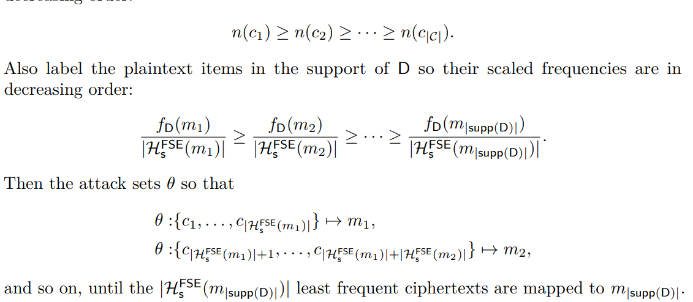

| Venue | Category |
|---|---|
| ICAR'17 | Encryption |
Frequency-smoothing Encryption: Preventing Snapshot Attacks on Deterministically Encrypted Data1. SummaryMotivation of this paperFrequency-smoothing encryption (FSE)Implementation and Evaluation2. Strength (Contributions of the paper)3. Weakness (Limitations of the paper)4. Future Works
This paper intends to combat inference attacks of classical frequency analysis via using homophnic encoding.
develop the concept of frequency-smoothing encryption (FSE) prevent inference attacks in the snapshot attack model
then the adversary can access to a snapshot opf the encrypted data try to match frequencies in the encrypted domain with those in plaintext domain
the number of encodings for each plaintext m ideally being proportional to the frequency of m this method wants to ensure that each message has enough homophones to combat frequency (but not so many that they cannot be all be computed on the fly)
even an adversary who knows the underlying plaintext frequencies cannot infer anything about the data.
Difference Measurement \Delta (distribution adaptation parameter): Use the upper bound on the Kolomogorov-Smirnov statistic of the two distributions.
statistical distance this parameter indicates how much uncertainty is associated with the initial estimated distribution \hat{D}. If \Delta = 0, it indicates complete confidence, the scheme will be entirely non-adaptive, ie., static.
- homophonic encoding: smooth frequencies
- deterministic symmetric-key encryption: provide privacy
A Stateful homophnic encoding scheme
All algorithms and parameters in a homophonic encoding scheme are keyless.
provide no message privacy. Only consider the fixed-length encoding
In this setting, it considers the indistinguishability of a series of samples from one of two distributions is more appropriate.
Deterministic encryption
Here, it bounds an HE-SMOOTH adversary;s distinguishing advantage using a result from Baigneres, Junod, and Vaudenay's statistical framework for analyzing distinguisher.
It shows that error probability of an optimal distinguisher given a number of samples from two close distributions D_0 and D_1 this can be bounded in terms of the Kullback-Leibler (KL) divergence of D_0 with respect to D_1
Each messgae will be replaced by one of its coresponding r-bit strings.
One way of partitioning the set of r-bit strings according to D:
the messages in supp(D)={m_1, m_2, ...} are numbered by increasing frequency according to D.
The encoding algorithm for IBHE simply selects an encoding e of m_i uniformly at random from the relevant interval. This interval has size approximately 2^r \times f_D(m_i), as desired.
How to set the encoding bitlength r?
r must be at least log_2|supp(D)|, so each message can have at least one possible encoding. r must be big enough so that each message is assigned a non-empty interval using this partitioning technique.
This paper also proves the bound of r to guarantee that every message m \in supp(D) has at least h homophones
Some variants with practicality in mind:
- append encodings to message rather than entirely replacing them.
- modify how intervals (homophone sets) are allocated in such a way that smaller encoding bitlengths are possible. Just assign one homophone to each "too small" message. It does this until each of the remaining messages can be assigned at least one homophone
- the length of tag is l \geq 1
- each message has at most 2^l homophones.
- each message has a band that determines the number of possible tags that can be appended to it and therefore the number of homophones it has.
Divide the interval (0, f_D(m_{|supp(D)|})) into 2^l bands, and each of width
This can numbered 1 to 2^l. The message whose frequencies are in band i, in the interval ((i-1)*w, i*w), will each have i homophones.
the most frequent message m_{|M|}, will have 2^l homophones, all possible l-bit strings can be appended to it.
The main advantages of this banded HE schemes are that there is no minimum tag length and decoding is fast.
It does not need any table of frequency information to decode. Just removes the last l bits of the e to remove the original message m.
The deterministic decryption functions
it cannot map one ciphertext to multiple plaintexts
Map the most frequently occurring ciphertexts (with largest n(c) values) to the messages with the largest "scaled frequencies" \frac{f_D(m)}{|H^{FSE}(m)|}
The adversary's goal is to find the correct many-to-one decryption mapping \theta: C \rightarrow M

the state s of an FSE scheme is stored locally at the client. a proxy that transparently performs the encryption and decryption operations.
Do the simulation of FSE and then attacking the FSE scheme
Compared with the attack
it applies the technique of maximum likelihood estimation (MLE) to derive an efficient attack on a static FSE scheme
Goal: prove attacking FSE is hard, in particular, at least as hard as attacking DE.
this paper shows that the answer to this question is positive, at least for certain distributions.